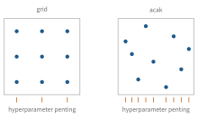

Bab 8
Deep Learning dalam Praktik
Teori deep learning saya dapat di semester pertama. Cara melatih
jaringan dengan benar, dan cara mencari tahu mengapa sebuah jaringan
tidak mau belajar, lebih banyak datang dari latihan-latihan kuliah Deep
Learning and Neural Networks II. Enam tugasnya bergerak dari dasar
PyTorch, jaringan visi dan transfer learning, pemantauan eksperimen dan
CNN lanjutan, autoencoder dan VAE, contoh adversarial dan GAN, sampai
normalizing flows. Arsitektur-arsitekturnya sudah dibahas di Bab 12. Bab ini mengumpulkan
sisi lainnya: apa yang terjadi di dalam kerangka kerja ketika kita
menulis satu baris loss.backward(), dan kebiasaan kecil
yang memisahkan eksperimen yang berhasil dari yang membuang waktu
berhari-hari.
Graf komputasi dan autograd
Kuliah membuka dengan sejarah singkat kerangka kerja deep learning. Generasi awal seperti Theano dan TensorFlow 1 memakai graf statis: seluruh komputasi didefinisikan dulu sebagai graf simbolik, lalu dijalankan berkali-kali. PyTorch (Paszke dkk. 2019) memakai graf dinamis, yang dibangun ulang setiap kali kode dijalankan (define-by-run), sehingga kontrol alur Python biasa, seperti percabangan dan perulangan, bisa dipakai di dalam model. TensorFlow 2 mengambil jalan serupa dengan gradient tape yang merekam operasi selama lintasan maju.
Di balik layar, setiap tensor yang dihasilkan operasi menyimpan
rujukan ke operasi yang menghasilkannya dan ke input-input operasi itu.
Ketika backward() dipanggil pada loss skalar, kerangka
kerja menelusuri graf ini mundur dan menerapkan aturan rantai, persis
reverse-mode autodiff di Bab 7. Tiga
perilaku sering membingungkan pemula, dan ketiganya langsung masuk akal
dari gambaran ini. Gradien diakumulasikan ke atribut
.grad, tidak ditimpa, sehingga
optimizer.zero_grad() harus dipanggil sebelum setiap
lintasan mundur. Kalau lupa, langkah kedua memakai jumlah gradien
langkah pertama dan kedua. Memanggil .detach() memotong
graf, sehingga tidak ada gradien yang mengalir melewati tensor itu,
berguna misalnya untuk target network di DQN (Bab
16). Dan blok torch.no_grad() menghentikan perekaman
graf sama sekali, sehingga evaluasi tidak memakan memori untuk menyimpan
aktivasi yang tidak akan diturunkan.
Satu putaran pelatihan, dengan urutan yang menjadi bahan soal di kuliah, berbentuk seperti ini:
model.train()
for x, y in loader:
x, y = x.to(device), y.to(device)
optimizer.zero_grad() # bersihkan gradien lama
loss = loss_fn(model(x), y) # lintasan maju, graf direkam
loss.backward() # lintasan mundur, gradien diisi
optimizer.step() # perbarui parameterUntuk evaluasi, model.eval() mematikan dropout dan
membuat batch normalization memakai statistik bergerak, dan
torch.no_grad() membungkus lintasan maju. Data dibaca oleh
Dataset, yang tahu cara mengambil satu contoh, dan
DataLoader, yang menyusunnya menjadi mini-batch, mengacak
urutannya, dan memuatnya secara paralel dengan beberapa proses pekerja
agar GPU tidak menunggu.
Resep men-debug jaringan
Jaringan yang tidak belajar jarang memberi pesan galat. Ia hanya menghasilkan kurva loss yang datar atau angka yang tidak masuk akal. Beberapa pemeriksaan murah menangkap sebagian besar masalah.
Pemeriksaan pertama adalah loss awal. Untuk klasifikasi \(K\) kelas dengan softmax dan cross-entropy, jaringan yang baru diinisialisasi seharusnya memberi peluang hampir seragam, \(1/K\) untuk setiap kelas, sehingga loss awalnya mendekati \(-\ln(1/K)=\ln K\). Untuk sepuluh kelas, itu sekitar \(2{,}30\). Kalau loss awal jauh lebih besar, misalnya 30, logit awalnya terlalu besar dan jaringan sudah yakin pada jawaban yang salah sebelum belajar apa pun, tanda inisialisasi atau normalisasi input yang keliru.
Pemeriksaan kedua adalah overfit satu batch kecil. Ambil
beberapa contoh saja dan latih berulang-ulang pada contoh yang sama.
Jaringan dengan kapasitas apa pun seharusnya bisa menghafalnya sampai
loss mendekati nol. Kalau tidak bisa, masalahnya ada di kode, misalnya
label yang tidak sesuai dengan input, gradien yang tidak mengalir karena
detach yang salah tempat, atau laju belajar yang keliru,
bukan di jumlah data atau arsitektur.
Pemeriksaan ketiga adalah laju belajar. Naikkan laju belajar secara eksponensial dari kecil ke amat besar selama beberapa ratus langkah, dan catat loss di setiap langkah. Loss mula-mula hampir tidak berubah, lalu turun cepat, lalu meledak. Laju belajar yang baik biasanya sedikit di bawah titik loss turun paling curam, jauh sebelum ledakan. Kurva ini menghubungkan praktik dengan teori di Bab 4: titik ledakan adalah tempat langkah melampaui batas \(2/L\).
Pemeriksaan terakhir adalah melihat apa yang dilihat jaringan. Zeiler dan Fergus (2014) memproyeksikan aktivasi lapisan dalam kembali ke ruang piksel dengan jaringan dekonvolusi, memakai indeks lokasi maksimum dari pooling untuk “membuka” pooling dan transposed convolution untuk membalik konvolusi. Lapisan awal ternyata merespons tepi dan warna, lapisan tengah tekstur, dan lapisan akhir bagian objek. Tugas kuliah meminta kami mereplikasi teknik ini dengan hanya mempertahankan beberapa aktivasi terbesar di setiap peta fitur. Gambar seperti ini sering langsung memperlihatkan bahwa jaringan memperhatikan latar belakang alih-alih objek, sama dengan pelajaran Grad-CAM di Bab 17.
Memori dan presisi
Ketika model atau batch tidak muat di memori GPU, dua teknik sering
dipakai. Gradient accumulation memecah satu batch besar menjadi
beberapa batch kecil, menjalankan lintasan maju dan mundur untuk
masing-masing tanpa memanggil optimizer.step(), lalu
memperbarui parameter sekali di akhir. Karena gradien diakumulasikan,
hasilnya sama dengan satu batch besar, asal loss setiap batch kecil
dibagi dengan jumlah batch kecil. Batch 256 bisa dijalankan sebagai
empat batch 64, dengan setiap loss dikalikan \(1/4\). Pengecualiannya adalah batch
normalization, yang tetap melihat statistik batch kecil.
Mixed precision (Micikevicius dkk. 2017) menghitung sebagian besar operasi dalam bilangan floating point 16 bit, yang memakan separuh memori dan jauh lebih cepat di GPU modern, sambil menyimpan salinan utama bobot dalam 32 bit. Masalahnya ada pada rentang angka. Format setengah presisi standar hanya bisa mewakili bilangan normal dari sekitar \(6\times10^{-5}\) sampai \(65\,504\). Gradien yang lebih kecil dari batas bawah, yang umum di jaringan dalam, menjadi nol. Obatnya adalah loss scaling: kalikan loss dengan faktor besar, misalnya 1024, sebelum lintasan mundur, sehingga semua gradien ikut membesar 1024 kali dan keluar dari daerah yang hilang, lalu bagi kembali sebelum memperbarui bobot. Faktornya bisa disesuaikan otomatis: diperkecil kalau muncul angka tak hingga, diperbesar perlahan kalau tidak.
Mencari hyperparameter
Laju belajar, ukuran batch, weight decay, jumlah lapisan, dan peluang dropout harus dipilih sebelum pelatihan. Kuliah membahas beberapa strategi. Pencarian manual mengandalkan intuisi. Pencarian grid mencoba semua kombinasi dari beberapa nilai untuk setiap hyperparameter. Pencarian acak menarik kombinasi secara acak.
Bergstra dan Bengio (2012) memberi argumen sederhana mengapa pencarian acak biasanya lebih baik dari grid. Misalkan dari dua hyperparameter hanya satu yang benar-benar berpengaruh, keadaan yang ternyata umum. Grid \(3\times3\) menghabiskan sembilan percobaan tetapi hanya mencoba tiga nilai berbeda dari hyperparameter yang penting. Sembilan percobaan acak mencoba sembilan nilai berbeda (Gambar 8.1). Ada juga argumen peluang yang tidak bergantung pada dimensi. Kalau kita ingin setidaknya satu percobaan jatuh di lima persen konfigurasi terbaik, peluang \(n\) percobaan acak semuanya gagal adalah \(0{,}95^n\). Dengan 60 percobaan, peluang berhasil \(1-0{,}95^{60}\approx95\) persen, berapa pun jumlah hyperparameter-nya.

Bayesian optimization (Snoek, Larochelle, dan Adams 2012) memakai hasil percobaan sebelumnya untuk memilih percobaan berikutnya. Sebuah model pengganti, biasanya Gaussian process dari Bab 15, memodelkan skor validasi sebagai fungsi hyperparameter, lengkap dengan ketidakpastiannya. Titik berikutnya dipilih dengan memaksimalkan sebuah fungsi akuisisi. Yang paling umum adalah expected improvement: kalau skor terbaik sejauh ini \(f^*\) dan model meramal skor di titik \(\boldsymbol{x}\) berdistribusi \(\mathcal{N}(\mu,\sigma^2)\), perbaikan harapan atas \(f^*\) adalah \[\mathrm{EI}(\boldsymbol{x})=(\mu-f^*)\,\Phi(z)+\sigma\,\varphi(z),\qquad z=\frac{\mu-f^*}{\sigma},\] dengan \(\Phi\) dan \(\varphi\) fungsi distribusi dan kerapatan normal baku. Suku pertama menghargai titik yang diramal bagus, suku kedua menghargai titik yang tidak pasti, keseimbangan eksplorasi dan eksploitasi yang sama dengan bandit di Bab 5. Dua titik dengan \(\mu\) sama dengan \(f^*\) punya \(z=0\), sehingga \(\mathrm{EI}=\sigma\varphi(0)\approx0{,}40\,\sigma\): titik yang lebih tidak pasti lebih menarik untuk dicoba. Neural architecture search memperluas gagasan ini ke struktur jaringan itu sendiri, dengan harga komputasi yang jauh lebih besar.
Untuk semua strategi, pemantauan eksperimen menjadi kebutuhan, bukan kemewahan. Kuliah memakai alat pencatat eksperimen seperti Weights & Biases: setiap percobaan mencatat hyperparameter, kurva loss latih dan validasi, dan versi kode. Tanpa catatan seperti itu, eksperimen terbaik minggu lalu tidak bisa diulang.
Transfer learning lebih dekat
Bab 12 menyebut resep
dasar transfer learning: bekukan lapisan yang sudah dilatih, latih ulang
kepalanya. Di PyTorch, membekukan berarti mematikan
requires_grad pada parameter yang tidak ingin diubah,
sehingga autograd tidak menghitung gradiennya dan optimizer tidak
menyentuhnya. Gambar input juga harus disesuaikan dengan apa yang
dilihat jaringan saat pretraining, misalnya diperbesar ke \(224\times224\) dan dinormalisasi dengan
rata-rata dan simpangan baku ImageNet.
Lapisan mana yang sebaiknya dibekukan? Yosinski dkk. (2014) mengukur seberapa mudah fitur di setiap lapisan dipindahkan dari satu tugas ke tugas lain. Fitur lapisan awal bersifat umum dan hampir selalu bisa dipakai ulang. Fitur lapisan akhir semakin spesifik pada tugas asal. Mereka juga menemukan bahwa memindahkan fitur lalu menyetel ulang seluruh jaringan memberi generalisasi yang lebih baik daripada melatih dari nol, bahkan ketika data tugas baru cukup banyak. Dalam praktik, semakin sedikit data dan semakin mirip tugasnya, semakin banyak lapisan yang dibekukan. Semakin banyak data dan semakin berbeda tugasnya, semakin banyak lapisan yang disetel ulang, biasanya dengan laju belajar yang lebih kecil untuk lapisan awal.
Mengulang hasil
Hasil deep learning sulit diulang persis. Bobot awal, urutan data, dropout, dan augmentasi semuanya acak, dan beberapa operasi GPU tidak deterministik karena urutan penjumlahan floating point yang berubah-ubah memberi hasil yang sedikit berbeda. Menetapkan benih acak untuk semua sumber keacakan membuat satu proses bisa diulang. Tetapi benih yang berbeda tetap memberi hasil yang berbeda, kadang cukup jauh. Karena itu kebiasaan yang jujur adalah menjalankan beberapa benih dan melaporkan rata-rata beserta sebarannya. Selisih dua metode yang lebih kecil dari sebaran antar-benih belum bisa disebut perbaikan.
Di luar kelas
Kebiasaan di bab ini berlaku di semua bab penerapan. Pemeriksaan loss awal dan overfit satu batch sama bergunanya untuk PINN (Bab 29) dan simulator graf (Bab 30) seperti untuk klasifikasi gambar. Mixed precision memungkinkan model fondasi cuaca dan protein dilatih dalam waktu yang wajar. Bayesian optimization dipakai bukan hanya untuk hyperparameter jaringan, tetapi juga untuk mengkalibrasi parameter simulasi yang mahal, di mana setiap evaluasi berarti satu simulasi penuh. Dan laporan dengan beberapa benih dan pita sebaran adalah pengingat yang sama dengan error bar di Bab 2: angka tanpa ketidakpastian hanya separuh cerita.
Catatan sumber.
Bab ini mengikuti tugas dan materi kuliah Deep Learning and Neural Networks II (PyTorch dan autograd, jaringan visi dan transfer learning, pemantauan eksperimen dan pencarian hyperparameter, CNN lanjutan, transposed convolution dan visualisasi, autoencoder dan VAE, contoh adversarial dan GAN, normalizing flows). Makalah pendukung: Paszke dkk. (2019), Bergstra dan Bengio (2012), Snoek, Larochelle, dan Adams (2012), Yosinski dkk. (2014), Zeiler dan Fergus (2014), dan Micikevicius dkk. (2017).